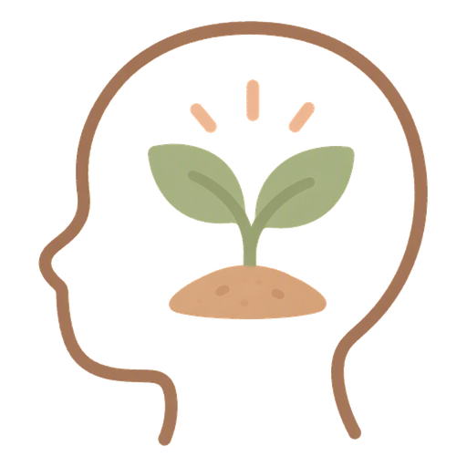
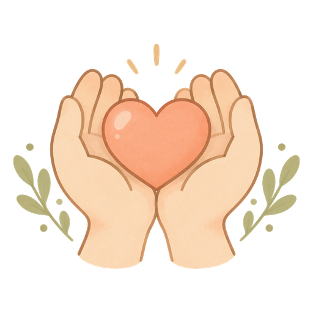
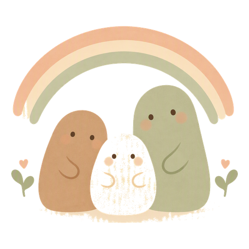

求助熱線
以下為公開求助熱線整理。號碼可能隨服務調整；如有疑問，請直接向相關機構查詢。 本頁不載個案或新聞內容。

緊急-
緊急求助 緊急
面對即時生命危險或不安全情況時使用。
情緒與自殺預防
-
情緒通
24 小時；亦可 WhatsApp：18111
-
生命熱線
24 小時預防自殺熱線
-
香港撒瑪利亞防止自殺會
24 小時情緒支援熱線（與「撒瑪利亞會」為不同機構）
-
撒瑪利亞會
24 小時；多語言情緒支援
-
向晴熱線（明愛向晴軒）
24 小時；專業社工接聽

精神健康
照顧者支援-
照顧者支援專線
24 小時；專業社工
-
摯安 Zone（照顧者支援）
聽力／語言障礙人士文字支援

家庭、社署與青少年-
社會福利署熱線
話音系統 24 小時；社工：周一至五 09:00–17:00、周六 09:00–12:00；其餘時間可轉東華三院熱線／外展或留言
-
芷若園
24 小時危機介入及支援熱線
-
協青社
電話熱線：24 小時；WhatsApp：21:00–06:00（同一號碼）
使用本頁資訊前，請一併參閱 免責聲明。